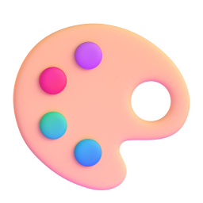

@laz.creator
01 / 06
7 признаков
,
что
текст
написала
нейросеть
листай
@laz.creator
02 / 06
Текст писал ИИ?
7 признаков
начало
Как начинается
Комплимент вопросу в первой строке
Штампы вроде в современном мире
Смотри
на
первую строку
@laz.creator
03 / 06
Текст писал ИИ?
7 признаков
стиль
Как звучит
Три прилагательных подряд
Слова важно отметить
Все абзацы одной длины

Потом
на
стиль
@laz.creator
04 / 06
Текст писал ИИ?
7 признаков
смысл
О чём говорит
Ни одного примера
Вывод пересказывает начало
И
на
смысл
@laz.creator
05 / 06
Текст писал ИИ?
7 признаков
Когда клиент в третий раз читает важно отметить
Узнал
себя
?
@laz.creator
06 / 06
нашёл 3 признака? переписывай
Комплимент в начале
Штампы
Три прилагательных
Важно отметить
Одинаковые абзацы
Ноль конкретики
Вывод как начало
ИИшница
@iishnitsa_nazavtrak
Подписаться
ссылка в шапке профиля
Напиши в комментариях
ИИШНИЦА
Проверяй
перед
публикацией